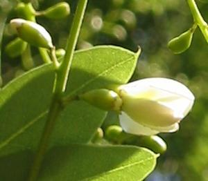
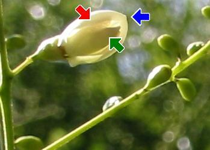

|
| Der Perlschnurbaum blüht erst im August oder September.
Die gelblich-weißen Blüten nennen wir Schmetterlingsblüten.
 |  Sie haben 5 Blütenkronblätter:
1 großes Blatt oben (die Fahne), 2 Blätter an den Seiten (die Flügel) und zwei Blätter unten in der Mitte (das Schiffchen).
|